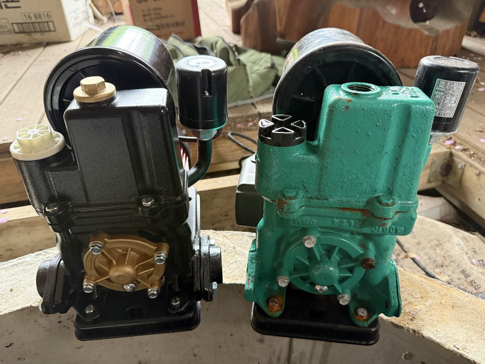
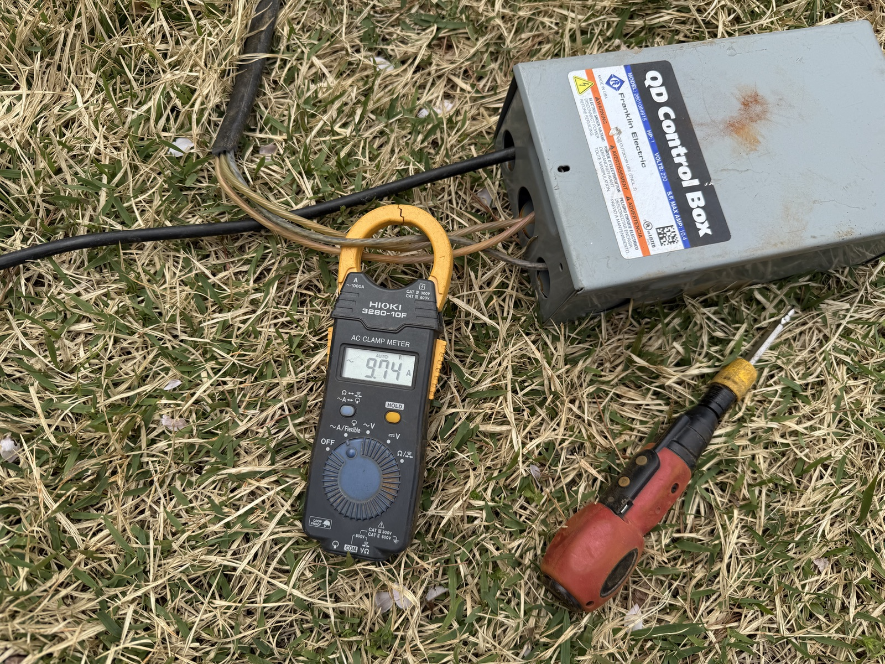
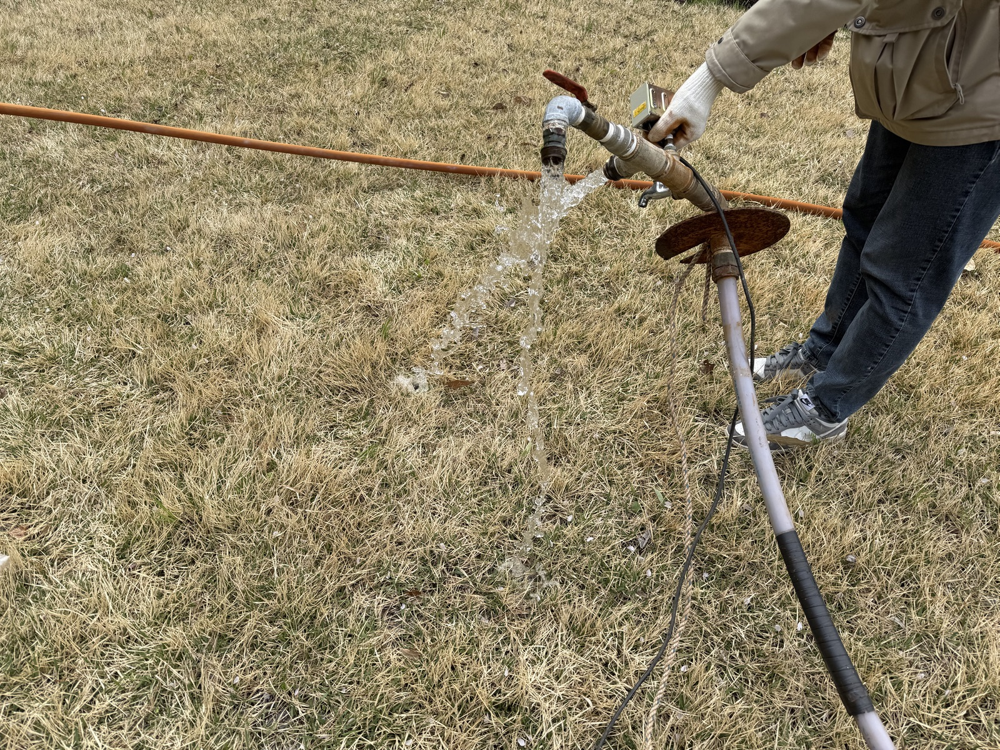
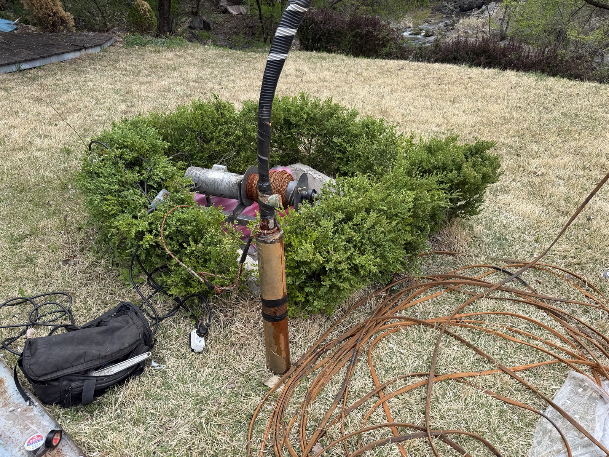
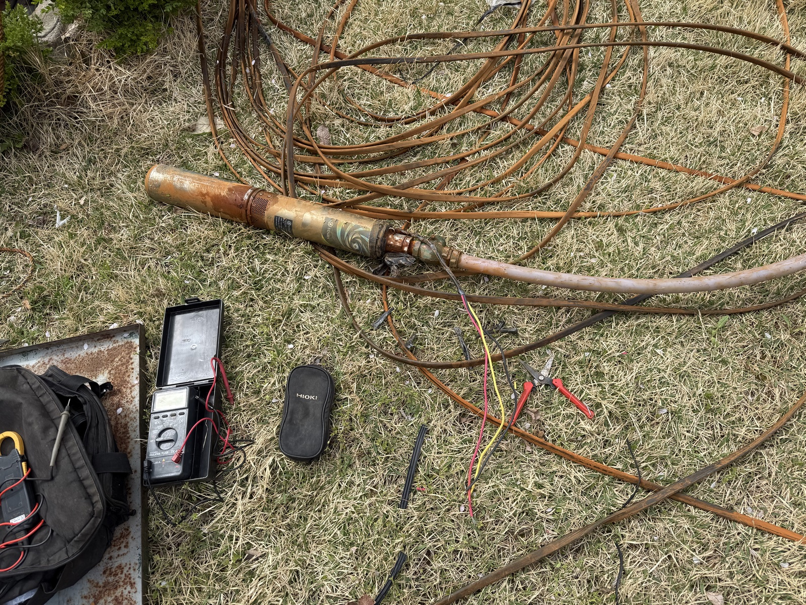
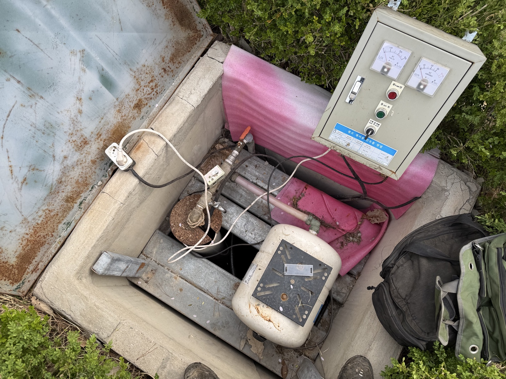
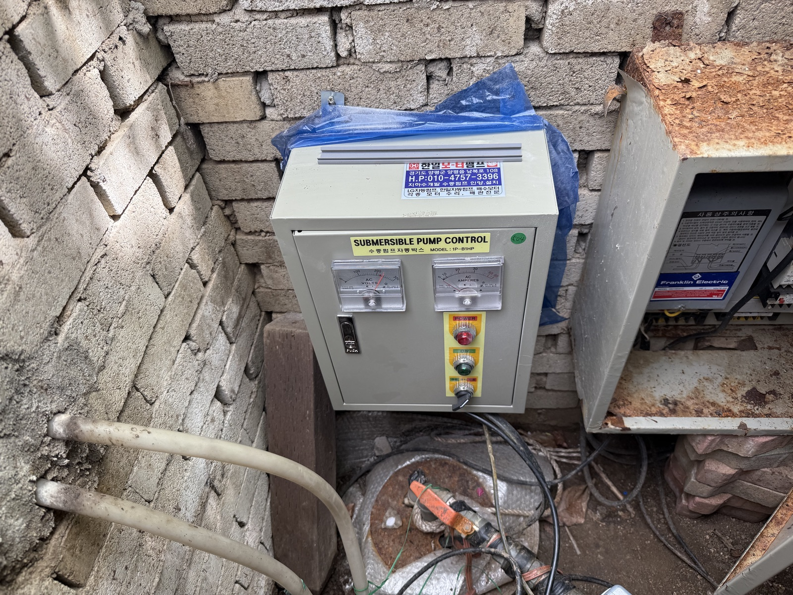
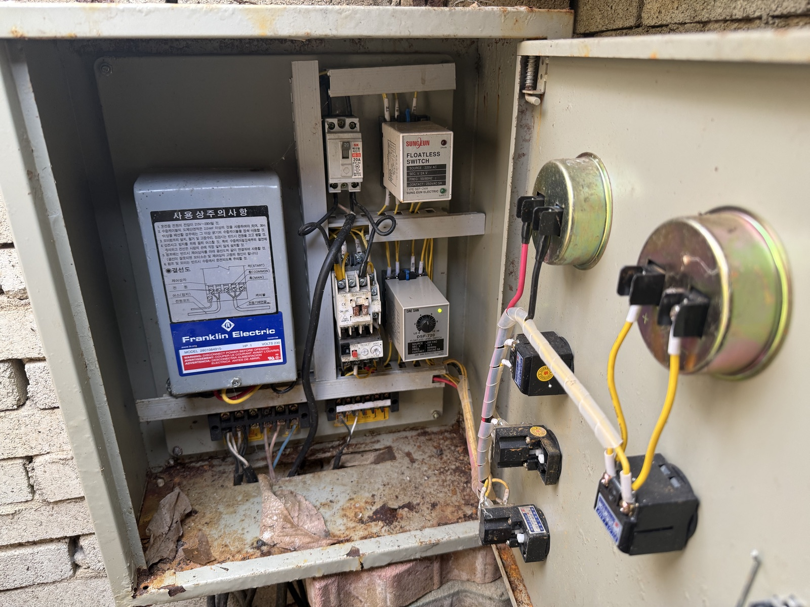

"확인하셨겠지만 이체는 어제 드렸습니다. 잘 수리해 주시고 서비스도 함께 해주셔서 감사합니다. 문제 생기면 연락 주세요."
가
수리 완료 고객님
서비스 수리 후 감사 문자
전원주택, 펜션, 농가의 지하수펌프와 모터 고장을 현장에서 확인하고 수리 또는 교체 방향을 안내드립니다.
윌로펌프, 한일펌프, 심정수중모터, 압력탱크까지 증상과 원인을 먼저 설명드린 뒤 필요한 작업만 진행합니다.
1,000건+
누적 시공·점검
8년+
펌프·모터 경험
방문 전
예상 비용 안내
물이 안 나오는 문제는 전기, 압력탱크, 압력스위치, 배관 상태가 함께 얽혀 있을 수 있습니다. 현장에서 확인한 내용을 설명드리고 작업 범위와 비용을 안내합니다.
펌프·모터 전문 수리 경험을 바탕으로 정확한 진단과 수리를 제공합니다.
불필요한 교체를 권유하지 않습니다. 고장 원인을 설명드리고 합리적인 방향을 안내합니다.
출장, 점검, 수리, 설치, 교체까지 한 번에 처리합니다. 별도 업체를 찾을 필요 없습니다.
가평 전원주택, 펜션, 농가의 지하수펌프 고장 및 물 공급 문제를 상담해 드립니다.
고객님이 보내주신 문자 후기에서 개인정보와 금액은 제외하고 핵심 내용만 정리했습니다. 수리 후 물이 잘 나오고, 조용해지고, 다시 연락하겠다는 반응이 많았습니다.
문자
실제 후기 기반
수리 후
작동 상태 확인
재연락
문제 시 상담
추천
주변 소개 언급
"확인하셨겠지만 이체는 어제 드렸습니다. 잘 수리해 주시고 서비스도 함께 해주셔서 감사합니다. 문제 생기면 연락 주세요."
수리 완료 고객님
서비스 수리 후 감사 문자
"오전에 펌프 임펠라 교체한 사람입니다. 유입구 바킹을 조립했더니 물이 잘 나옵니다. 감사합니다."
펌프 임펠라 교체 고객님
수리 후 물 토출 정상 확인
"선생님, 말씀드린 대로 모터 교체 시 동파방지도 신경 좀 써 주시면 감사하겠습니다. 감사합니다."
모터 교체 상담 고객님
교체 전 요청 사항 확인
"소리가 안 나서 잘 잔다고 주민들이 고맙다고 인사하러 왔네요. 감사합니다."
소음 문제 해결 고객님
작동 소음 개선 후 문자
"감사합니다 덕분에 마무리 잘 할 수 있었습니다. 좋은 하루 되세요."
현장 마무리 고객님
작업 완료 후 감사 문자
"수고하셨습니다. 감사합니다."
작업 완료 확인 문자
"사장님 감사합니다. 주위에 광고할게요."
주변 추천 언급
"감사합니다! 앞으로도 잘 부탁드립니다."
재이용 의사
"입금 확인하세요. 수고 많으셨어요."
작업 후 정산 확인
"보내주신 자료 잘 받았습니다. 질소 탱크가 꼭 필요한 거네요."
상담 자료 확인
"또 문제 생기면 연락드릴게요. 매번 감사합니다."
사후 상담 의사
가평읍, 청평면, 설악면, 상면, 조종면, 북면, 상천리, 대성리, 현리, 목동리 등 가평 전 지역 출장 상담 가능합니다. 전원주택, 펜션, 농가, 카페, 식당 등 지하수를 사용하는 곳이라면 어디든 방문하여 점검해 드립니다.
가평읍 시내 및 인근 마을 전원주택, 펜션, 상가 지하수펌프 출장 점검
청평면 대성리, 호명리 등 펜션 밀집 지역 지하수펌프 고장 출장 수리
설악면 전원주택, 농가, 펜션 지하수펌프 및 압력탱크 점검 출장
상면 전원주택, 세컨하우스 지하수 물 공급 문제 점검 및 수리
조종면 현리, 상천리 일대 펜션, 카페 지하수펌프 출장 점검
북면 농가, 전원주택, 목장 등 지하수펌프 및 모터 출장 수리
출장비는 경기도 양평군 양평읍 남북로 108 매장 기준 편도 거리로 산정합니다. 현장 주소를 알려주시면 방문 전 예상 비용을 먼저 안내드립니다.
7km 이내
30,000원
8~15km
50,000원
16~25km
70,000원
26~35km
90,000원
36~45km
110,000원
※ 위 출장비는 매장 기준 편도 거리 기준입니다.
※ 작업 난이도, 야간·긴급 출동 여부에 따라 비용이 달라질 수 있으며, 방문 전 최대한 구체적으로 안내드립니다.
※ 현장에서 추가 작업이 필요하면 작업 전 내용과 비용을 먼저 설명드립니다.
방문 전 비용을 먼저 안내드리고, 현장에서 원인을 확인한 뒤 작업 여부를 설명드립니다.
가평 현장 위치를 확인하고 방문 가능 여부를 안내드립니다.
매장 기준 편도 거리로 예상 출장비를 먼저 설명드립니다.
무조건 교체하지 않고 물이 안 나오는 원인부터 확인합니다.
수리 또는 교체 비용을 안내드린 뒤 동의 후 작업합니다.
증상만으로 바로 교체를 판단하지 않습니다. 모터, 펌프, 압력탱크, 전기, 배관 상태를 함께 확인해 원인을 좁힙니다.
수도꼭지를 틀어도 물이 전혀 나오지 않는 경우 펌프나 모터 고장을 의심해 볼 수 있습니다.
모터 소리는 나지만 물이 올라오지 않으면 임펠러 마모, 체크밸브, 배관 문제를 점검해야 합니다.
압력탱크 내부 고무막 손상이나 압력스위치 이상으로 펌프가 반복 작동할 수 있습니다.
수압이 낮아진 경우 압력탱크, 펌프 성능 저하, 배관 노후 등 여러 원인이 있을 수 있습니다.
펌프 가동 시 차단기가 떨어지면 모터 절연 불량이나 전기 배선 문제를 점검해야 합니다.
압력탱크에서 물이 새거나, 이상한 소리가 나거나, 압력이 유지되지 않는 경우 교체가 필요할 수 있습니다.
지하수에서 붉은 물, 철분 냄새, 하얀 석회 찌꺼기가 나오면 필터 및 펌프 점검이 필요합니다.
펜션이나 전원주택에서 물이 간헐적으로 끊기면 펌프 용량, 압력설정, 배관 상태를 종합 점검해야 합니다.
가평은 펜션, 전원주택, 세컨하우스, 농가가 많아 지하수펌프 고장이 생활과 영업에 직접적인 영향을 줄 수 있습니다. 물이 완전히 끊긴 뒤 수리하는 것보다 압력탱크, 압력스위치, 모터 작동 상태를 미리 점검하는 것이 좋습니다.
성수기 전 지하수펌프와 압력탱크 상태를 미리 점검하면 갑작스러운 고장을 예방할 수 있습니다.
상시 거주하는 전원주택은 물 공급이 곧 생활 품질입니다. 정기 점검으로 안심하세요.
비워두는 기간이 긴 세컨하우스는 동파, 배관 노후, 펌프 고착 등 문제가 생기기 쉽습니다.
"물이 안 나올 수 있다는 불안감, 미리 점검하면 줄일 수 있습니다."
점검 상담 전화하기지하수펌프, 수중모터, 제어반, 압력탱크를 현장에서 확인한 자료입니다. 사진처럼 눈으로 확인한 내용을 바탕으로 수리 또는 교체 방향을 안내드립니다.
지하수 배관·수중모터 작업 영상
물이 나오는 상태와 현장 배관 상태를 함께 확인합니다.
펌프 작동 상태 확인 영상
소리, 진동, 수압 변화를 보며 원인을 좁힙니다.

펌프 교체 전후 비교
기존 장비 상태와 교체 장비를 비교합니다.

전류·전기 상태 확인
차단기와 모터 전류를 함께 점검합니다.

물 토출 상태 확인
물이 올라오는지 현장에서 직접 확인합니다.

수중모터 인양 작업
관정 내부 모터 상태를 확인합니다.

수중모터·케이블 점검
배선과 장비 상태를 함께 확인합니다.

압력탱크·제어반 확인
펌프실 전체 상태를 종합 점검합니다.

수중펌프 제어반
전압과 작동 상태를 확인합니다.

제어반 내부 점검
부품과 배선 상태를 세밀하게 봅니다.
가평·양평 지역 펌프수리, 모터수리, 압력탱크 교체 등 실제 현장 작업 사례와 매장 정보를 네이버에서 함께 확인하실 수 있습니다. 비슷한 증상이 있다면 참고해 보세요.
증상, 현장 위치, 사용 중인 펌프 종류를 알려주시면 방문 가능 여부와 예상 비용을 먼저 안내드립니다.
010-4757-3396경기도 양평군 양평읍 남북로 108